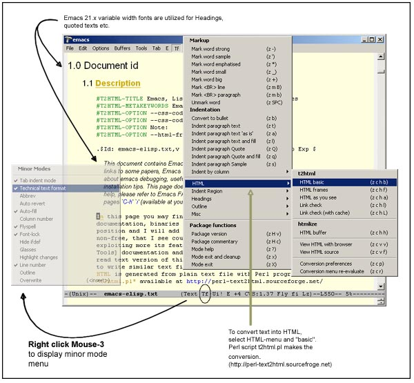
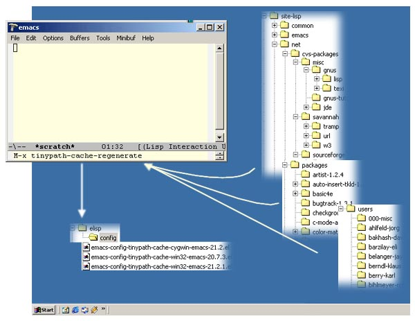
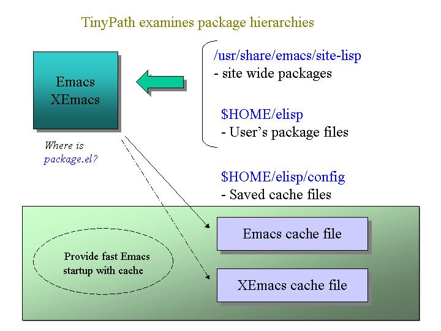
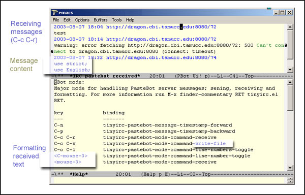

| Emacs Tiny Tools Project |
|  |
| White paper management package, tinytf.el, in action (photo from Windows native Emacs 21.2). Many pages in this site have been created with it. |
|  |
|  |
| Above; File monitoring package, tinypath.el, in action (photo from Windows native Emacs 21.2). You can divide lisp package files to separate directories and there is no need to manually update variables load-path and Info-default-directory-list. Install new packages and run M-x tinypath-cache-regenerate and your Emacs is up to date. The cache also speeds up loading packages with require, load, load-library, load-file. Refer to above link install for more information. |
|  |
| Pastebot server interface in action from package tinyirc.el (photo from Windows native Emacs 21.2). PasteBot servers can be used as semi-pemanent stores for code examples, showing system error messages or sharing configuration tips. The PasteBot servers are handy in IRC channels where bigger texts (over 10 line) can be sent for review. Supports numbering lines in the messages for more detailled inspection of the problem: "Hey, look at line 19". Note: PasteBot servers are independent from IRC servers and can be used for any textual information exchange. |
Future: Major changes in the installation and overall package structure is being planned. Installation and package activation will become more modular and easier to use. Utilities can be activated one by one basis. Monolithic tiny-setup.el will be phased out and split into separate files. Proper Debian packages.
2008-08: Savannah transition completed. Development continues with new distributed version control software
2007-08: Sourcefoge project move started. Project transition started to Savannah under more powerful Git version control sofware.
2003-05: Library cleanup continues. More functions have been checked and converted to prpoper prefixed to avoid possible clashes in Emacs (hasn't happened for many years though). Extensive speedup improvements to tinypath.el's load time.
2002-09: Emacs 21.x compatibility issues are under work. library cleanup is in progress. XEmacs compatibility is under testing.
2001-12: The CVS structure and package's directory structure has been redesigned. The HTML documentation is now bundled as well as the plain/text source. The namespace cleanup work has been finished and kit should now be free of any possible clashing functions. The setup center tiny-setup.el has been made better and more automatic. More features are now enabled. There are no known Emacs 21.1 compatibility problems.
2001-07: a "namespace-cleanup" work was started to ensure that all custom functions contain a proper library prefix. This cleanup work is necessary to isolate the tools from other, possibly conflicting, namespaces. It has no user visible chnages, but due to massive work that it needs, expect to see weird bugs in snapshots stamped after this date. Work is in progress to polish package build and release methods so that everything would be automatic. Latest releases of the code can be found only from CVS.
Linux/Unix: Emacs and XEmacs
Windows native environment (NT Emacs and NT XEmacs)
Windows Cygwin environment (Cygwin Emacs and Cygwin XEmacs)
The minimum criterias for versions are:
Emacs 20.1+ ( 21.2+ preferred )
XEmacs: 20.4+ ( 21.4+ preferred )
$ cd $HOME/elisp/packages
$ git clone git://git.savannah.nongnu.org/emacs-tiny-tools.git emacs-tiny-tools.git
$ git checkout --track -b devel origin/devel
... to get new updates from time to time
$ git pull
To install, add following lines to ~/.emacs startup file:
(require 'cl)
(push "~/elisp/packages/emacs-tiny-tools.git/lisp/tiny" 'load-path :test 'string=)
(push "~/elisp/packages/emacs-tiny-tools.git/lisp/other" 'load-path :test 'string=)
| All files in this project are licensed under GNU GPL. |
|
|
This project, as well as many other opensource projects, is hosted by Savannah. |
|
|
W3C validated. |